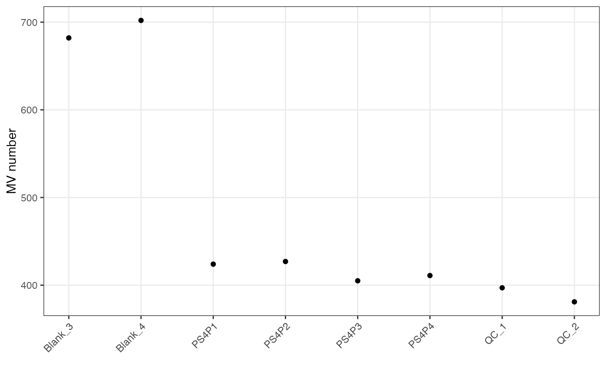
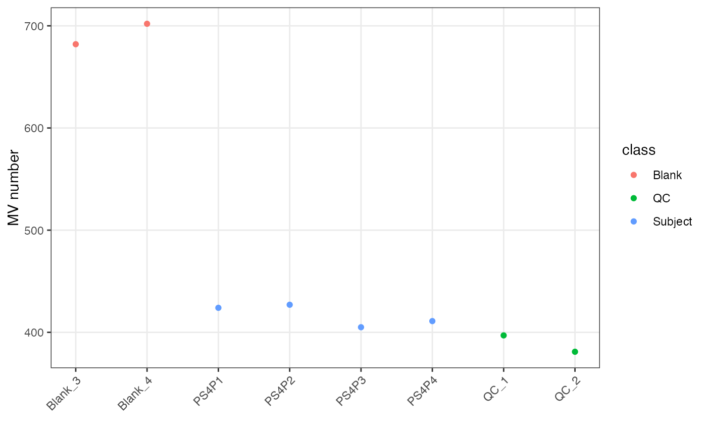
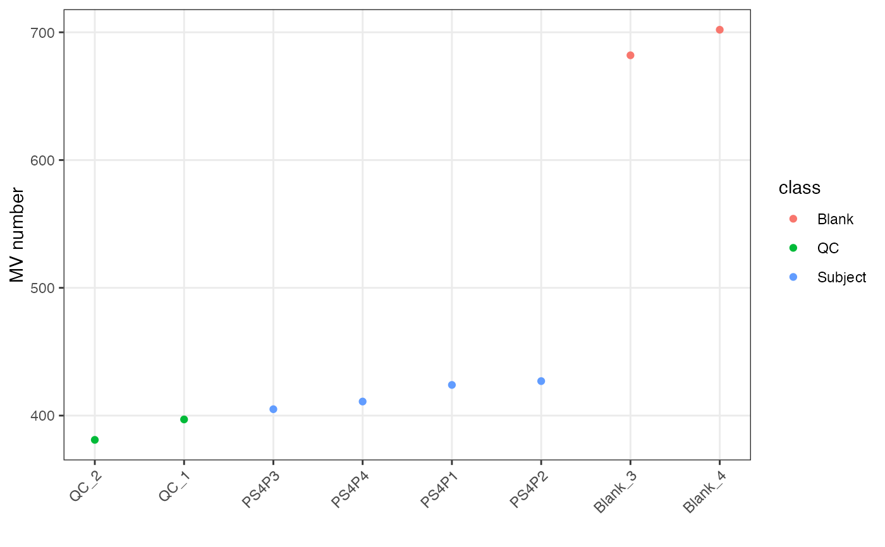
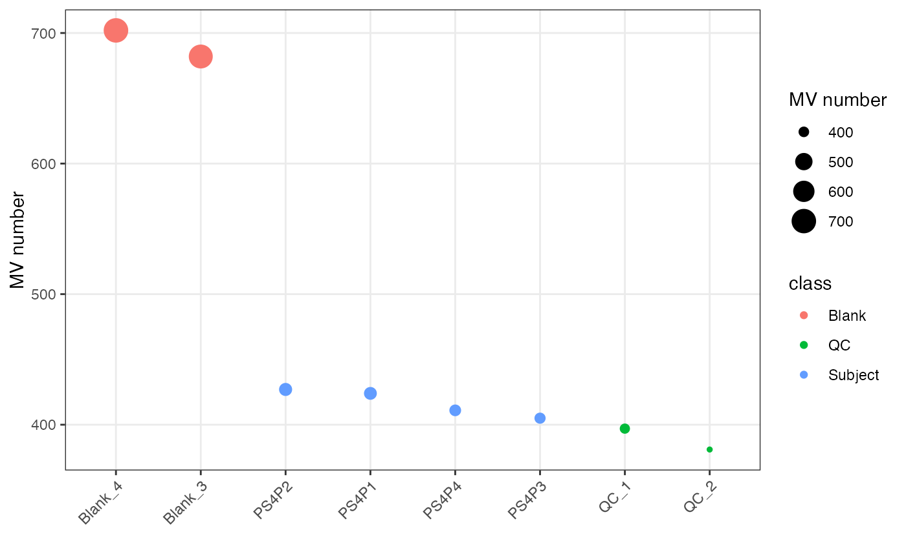

show missing values for each sample
show_sample_missing_values(
object,
color_by,
order_by,
percentage = FALSE,
desc = FALSE
)(required) A mass_dataset class object.
which column (in sample_info) is used to color samples
which column (in sample_info) is used to order samples
show MV percentage? TRUE or FALSE.
descend sample order or not. TRUE or FALSE.
A ggplot2 object
data("expression_data")
data("sample_info")
data("variable_info")
object =
create_mass_dataset(
expression_data = expression_data,
sample_info = sample_info,
variable_info = variable_info,
)
object
#> --------------------
#> massdataset version: 0.99.25
#> --------------------
#> 1.expression_data:[ 1000 x 8 data.frame]
#> 2.sample_info:[ 8 x 4 data.frame]
#> 3.variable_info:[ 1000 x 3 data.frame]
#> 4.sample_info_note:[ 4 x 2 data.frame]
#> 5.variable_info_note:[ 3 x 2 data.frame]
#> 6.ms2_data:[ 0 variables x 0 MS2 spectra]
#> --------------------
#> Processing information (extract_process_info())
#> create_mass_dataset ----------
#> Package Function.used Time
#> 1 massdataset create_mass_dataset() 2022-03-22 10:50:44
##show missing values plot
show_sample_missing_values(object)

show_sample_missing_values(object, color_by = "class")

show_sample_missing_values(object, color_by = "class", order_by = "na")

show_sample_missing_values(object, color_by = "class", order_by = "na",
desc = TRUE)
